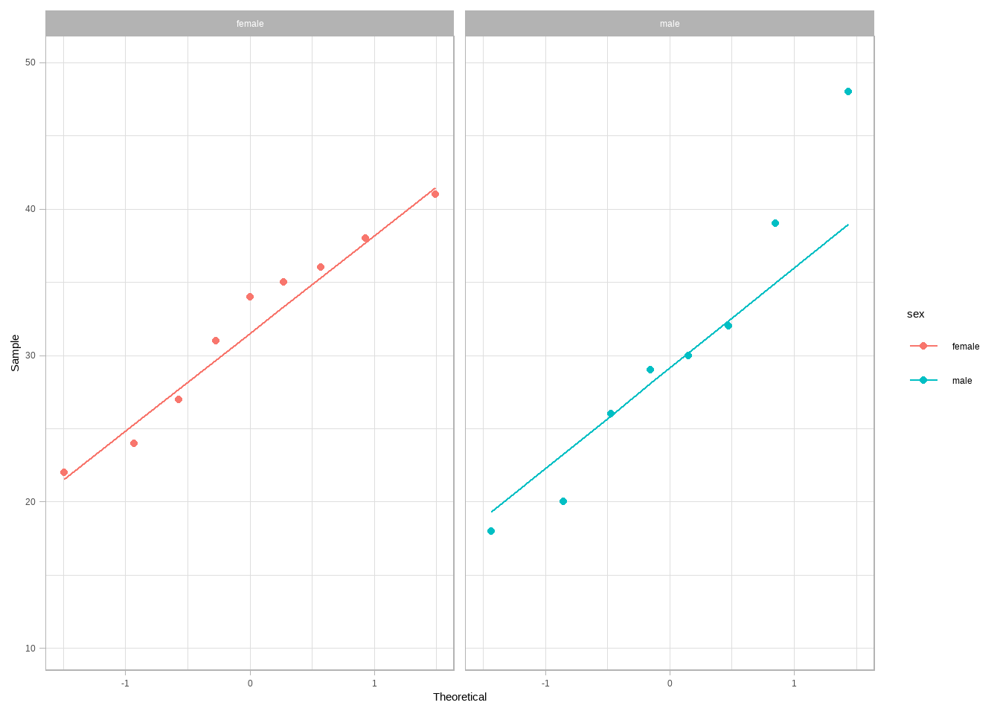
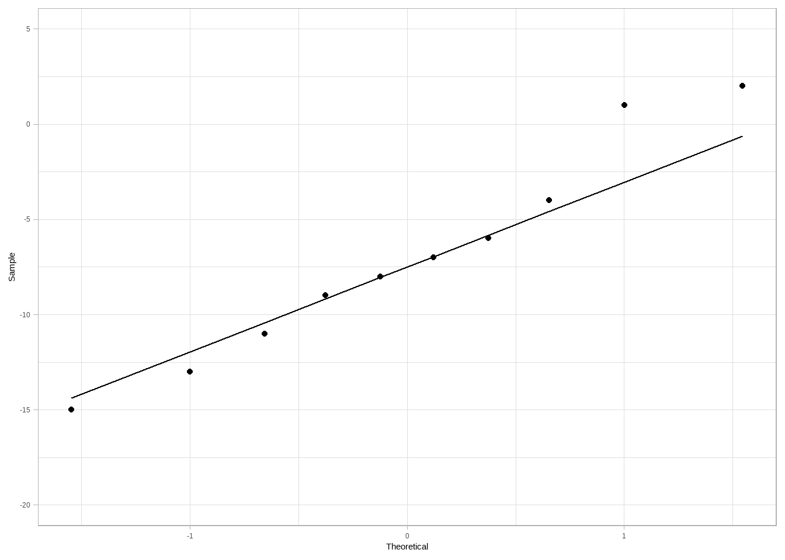

# Required packages for this R script
library(tidyverse)
library(ggpubr)
library(dlookr)
library(readxl)3 Non-parametric statistical tests in R
3.1 INDEPENDENT SAMPLES
In this lecture, the Wilcoxon-Mann-Whitney (WMW) test, also known as the Mann-Whitney U test or Wilcoxon Rank Sum test, is presented as a nonparametric method for comparing two independent samples. It is often used as an alternative to the independent samples t-test, particularly when the assumption of normality is violated or when dealing with small sample sizes.
3.1.1 Research question
A high school is pilot-testing a new curriculum for mathematics. To ensure the curriculum is equitable, the department head has collected the final exam scores from a small sample of students to test for significant differences in performance between male and female students.
3.1.2 Import dataset
If the dataset is saved in the subfolder named “data” of our RStudio project, we can read it with the read_excel() function from readxl package as follows:
dat_maths <- read_excel("data/maths.xlsx")
dat_maths# A tibble: 17 × 2
sex score
<chr> <dbl>
1 male 18
2 male 32
3 male 39
4 male 26
5 male 48
6 male 20
7 male 29
8 male 30
9 female 24
10 female 35
11 female 41
12 female 34
13 female 38
14 female 31
15 female 22
16 female 27
17 female 36The dataset has 17 students (rows) and is organized in a “long” format. It includes two variables (columns): the character (<chr>) sex variable (independent variable) and the numeric (<dbl>) score variable (dependent variable).
3.1.3 Descriptive statistics and Q-Q plots
# descriptive statistics using the package dlookr
dat_maths |>
group_by(sex) |>
describe(score) |>
select(sex, n, na, mean, sd, p25, p50, p75, skewness, kurtosis)# A tibble: 2 × 10
sex n na mean sd p25 p50 p75 skewness kurtosis
<chr> <int> <int> <dbl> <dbl> <dbl> <dbl> <dbl> <dbl> <dbl>
1 female 9 0 32 6.48 27 34 36 -0.351 -1.09
2 male 8 0 30.2 9.78 24.5 29.5 33.8 0.667 0.311# Q_Q plots using the package ggpubr
ggqqplot(dat_maths, "score", color = "sex", conf.int = FALSE) +
facet_wrap(~ sex) +
theme_light()
3.1.4 Wilcoxon-Mann-Whitney test
wilcox.test(score ~ sex, data = dat_maths)
Wilcoxon rank sum exact test
data: score by sex
W = 43, p-value = 0.5414
alternative hypothesis: true location shift is not equal to 0The results indicated no statistically significant difference (\(W = 43, p = 0.54\)).
3.2 DEPENDENT SAMPLES
The Wilcoxon Signed-Rank test is a non-parametric statistical test used to compare two groups of paired observations. It assesses whether the paired differences are centered around zero by considering both the magnitudes and signs of the differences, using their signed ranks. This test is often preferred when the paired differences are not normally distributed or when sample sizes are small.
3.2.1 Research question
Researchers aim to determine whether a specific breathing technique, Box Breathing, can reduce individuals’ heart rate, measured in beats per minute (BPM), immediately before they deliver a public speech. They measure the heart rates of 10 participants during a baseline stress period and again after the participants practice the breathing technique for five minutes.
3.2.2 Import dataset
If the dataset is saved in the subfolder named “data” of our RStudio project, we can read it with the read_excel() function from readxl package as follows:
dat_BPM <- read_excel("data/boxbreathing.xlsx")
dat_BPM# A tibble: 10 × 2
baseline_BPM boxbreath_BPM
<dbl> <dbl>
1 95 82
2 88 84
3 102 93
4 91 92
5 85 74
6 98 83
7 110 112
8 89 83
9 94 86
10 105 98The dataset has 10 participants and is organized in a “wide” format. It includes two columns with numeric (<dbl>): the baseline BPM and after the participants practice the breathing technique for five minutes.
First, we use the mutate() function to calculate the difference between the boxbreath and the baseline measurements of the BPM, as follows:
dat_BPM <- dat_BPM |>
mutate(dif_BPM = boxbreath_BPM - baseline_BPM)
dat_BPM# A tibble: 10 × 3
baseline_BPM boxbreath_BPM dif_BPM
<dbl> <dbl> <dbl>
1 95 82 -13
2 88 84 -4
3 102 93 -9
4 91 92 1
5 85 74 -11
6 98 83 -15
7 110 112 2
8 89 83 -6
9 94 86 -8
10 105 98 -73.2.3 Descriptive statistics and Q-Q plots
# descriptive statistics using the package dlookr
dat_BPM |>
dlookr::describe(dif_BPM, boxbreath_BPM, baseline_BPM) |>
select(described_variables, n, mean, sd, p25, p50, p75, skewness, kurtosis)# A tibble: 3 × 9
described_variables n mean sd p25 p50 p75 skewness kurtosis
<chr> <int> <dbl> <dbl> <dbl> <dbl> <dbl> <dbl> <dbl>
1 dif_BPM 10 -7 5.54 -10.5 -7.5 -4.5 0.383 -0.532
2 boxbreath_BPM 10 88.7 10.6 83 85 92.8 1.11 1.75
3 baseline_BPM 10 95.7 8.03 89.5 94.5 101 0.510 -0.660# Q_Q plots using the package ggpubr
ggqqplot(dat_BPM, "dif_BPM", conf.int = FALSE) +
theme_light()
3.2.4 Wilcoxon Signed-Rank Test
# Wilcoxon-Mann-Whitney test (non-parametric test)
wilcox.test(dat_BPM$boxbreath_BPM, dat_BPM$baseline_BPM, paired = TRUE)
Wilcoxon signed rank exact test
data: dat_BPM$boxbreath_BPM and dat_BPM$baseline_BPM
V = 3, p-value = 0.009766
alternative hypothesis: true location shift is not equal to 0# or use the differences
wilcox.test(dat_BPM$dif_BPM)
Wilcoxon signed rank exact test
data: dat_BPM$dif_BPM
V = 3, p-value = 0.009766
alternative hypothesis: true location is not equal to 0The results indicated a statistically significant decrease in BPM (\(V = 3, p = 0.009\)). The median BPM (85) after the intervention was significantly lower than the baseline (94.5), suggesting the technique is an effective method for heart rate reduction.